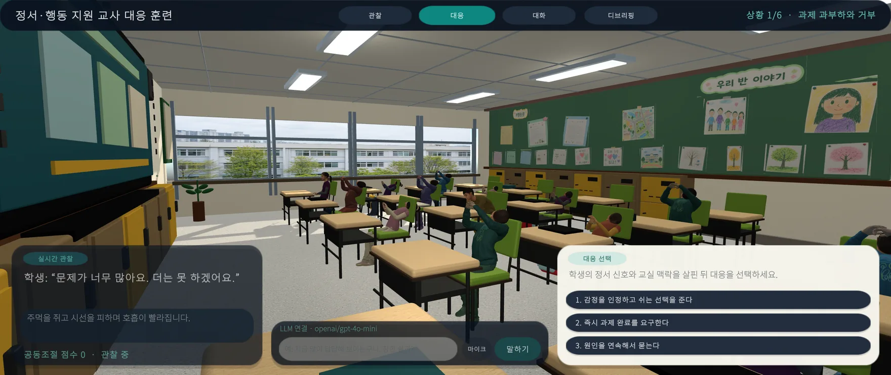

클래스룸 오케스트레이션과 ECD
정서·행동 신호의 인지, 우선순위 판단, 개입 시점과 전략을 수행 과제와 관찰 가능한 증거로 연결합니다. 안전한 선택만 연습하는 것이 아니라 판단의 이유와 후속 조치를 함께 다룹니다.
Method spine설계기반연구(DBR) · Evidence-Centered Design · 전문가 면담 · 시나리오 및 스토리보드
Generative AI × Teacher Education
교사의 정서행동위기 학생 대응 역량 강화를 위한 생성형 AI 통합 지능형 시뮬레이션 개발
Development of a Generative AI-Integrated Intelligent Simulation to Strengthen Educators' Competencies in Responding to Students in Emotional and Behavioral Crisis
정서·행동 위기 신호를 알아차리고, 학급 전체의 흐름을 지키며, 관계를 해치지 않는 개입을 반복해 연습합니다. 실제 학생에게 위험을 전가하지 않는 한국 초등학교 기반 교사교육 연구입니다.

Why this project / 연구 취지
정서·행동 위기 상황에서 교사는 한 학생의 언어, 표정, 몸짓을 읽는 동시에 수업의 안전과 참여를 조율해야 합니다. 이 연구는 그 복합 판단을 지식 암기가 아니라 반복 가능한 경험으로 바꾸려 합니다.
교실 맥락에서 발생하는 다수의 정서·행동 신호를 인지하고, 상황의 우선순위를 판단하며, 개입 시점과 전략을 조율하는 클래스룸 오케스트레이션 역량을 훈련합니다.
말, 시선, 얼굴, 자세, 과제 맥락에서 초기 신호를 구별합니다.
개입의 우선순위, 시점, 강도를 학급 전체의 흐름과 함께 판단합니다.
학생의 존엄과 관계를 지키면서 수업 복귀와 후속 지원을 연결합니다.
Current evidence / 현재 프로토타입
현재 빌드는 관찰, 대응 선택, 직접 대화, 디브리핑의 네 모드를 연결합니다. OpenRouter가 설정되면 생성형 학생 응답을 사용하고, 설정되지 않거나 실패하면 결정론적 로컬 응답으로 전체 훈련을 이어갑니다.
검증 기준일 · 2026.07.17Research tracks / 연구 트랙
제안서의 연구문제와 현재 프로토타입을 네 개의 연결된 트랙으로 정리했습니다. 각 트랙은 독립된 기능 목록이 아니라 다음 연차의 검증으로 이어지는 연구 단위입니다.
정서·행동 신호의 인지, 우선순위 판단, 개입 시점과 전략을 수행 과제와 관찰 가능한 증거로 연결합니다. 안전한 선택만 연습하는 것이 아니라 판단의 이유와 후속 조치를 함께 다룹니다.
Method spine설계기반연구(DBR) · Evidence-Centered Design · 전문가 면담 · 시나리오 및 스토리보드
교사는 정해진 대사만 고르는 대신 학생과 직접 대화할 수 있습니다. 응답 내용은 정서가와 연결되고, 시선, 자연스러운 제스처, 얼굴 Action Unit이 장면 안에서 연속적으로 전이됩니다.
Interaction layerOpenRouter LLM · 로컬 fallback · 음성 입출력 · 정서가(VAD) · 얼굴 AU · 제스처 마이크로 제어
교사의 발화 내용과 어조, 반응 속도, 선택 경로, 시선과 장면 맥락을 함께 분석하는 파이프라인을 구축하고, 한국과 미국의 현직·예비교사 연구로 교육적 효과와 사용성을 검증할 계획입니다.
Planned evidence사전·사후 비교 · 사용성 · 의사결정 로그 · 멀티모달 패턴 · 국가 간 맥락 비교
3차년도에는 교사용 훈련에서 축적한 설계 원리를 학생의 자기인식, 자기관리, 사회적 인식, 관계기술, 책임 있는 의사결정 연습으로 확장합니다. 초등학생이 안전하게 선택하고 성찰하는 게이미피케이션 구조를 탐색합니다.
Year 03 focusCASEL 5 역량 · 또래 갈등 · 윤리적 딜레마 · 감정 어휘 · 의사결정 패턴
Three-year roadmap / 연구계획
아래 일정과 학술 산출물은 제안서에 따른 계획입니다. 현재 구현 완료를 의미하지 않으며, 연구 승인과 현장 여건에 따라 조정될 수 있습니다.
문헌·사례 분석, 전문가 면담, ECD 프레임워크, 시나리오와 스토리보드를 만들고 생성형 AI 통합 시뮬레이션의 사용성과 의사결정 지원을 점검합니다.
계획 산출물
설계 원리 · 사용성 근거 · AERA 2027 발표 추진
정서위기 상황 시나리오를 확장하고 현직·예비교사의 사전·사후 변화를 비교합니다. 상호작용 로그와 멀티모달 데이터를 분석해 의사결정 패턴과 학습 경로를 탐색합니다.
계획 산출물
효과성 근거 · 분석 파이프라인 · 국제 저널 투고 추진
CASEL 5 역량을 중심으로 학생용 시나리오와 게이미피케이션을 개발하고, 사회정서역량 변화와 로그 기반 행동 패턴을 함께 살펴 교사·학생 통합 지원 모형을 제안합니다.
계획 산출물
학생 SEL 시뮬레이션 · 현장 확산 모형 · ETR&D 투고 추진
Research team / 연구팀
공개 제안서를 기반으로 한 핵심 연구진과 현재 참여 연구진입니다. 연락처와 비공개 운영 정보는 공개하지 않습니다.
Cheolil Lim
연구책임자
서울대학교 교육학과 교수
연구 설계와 총괄, 가상현실 시뮬레이션 설계원리 개발, 이론적 엄밀성과 연구 성과의 질 관리
Jewoong Moon
해외공동연구원
The University of Alabama
Instructional Technology 조교수
생성형 AI 통합 웹·XR 시뮬레이션 개발, 국외 연구 협력, 상호작용 로그와 학습분석 파이프라인
Dr. Sumin Hong
박사 · 실무 총괄
서울대학교 학습과학연구소 연구원
시뮬레이션 설계·개발·평가 전 과정, 국내외 데이터 수집 및 분석, 연구진 협업과 단계별 산출물 관리
박사과정 · 참여 연구진
서울대학교
프로젝트 참여 연구진
석사과정 · 참여 연구진
서울대학교
프로젝트 참여 연구진
참여 연구진
건국대학교
프로젝트 참여 연구진
Research boundaries / 연구 경계
교사의 관찰과 대응 연습을 지원하며, 학생을 진단하거나 임상 치료를 대체하지 않습니다.
3개년 일정과 논문·학술대회는 추진 계획으로 표시하고, 현재 검증된 프로토타입 지표와 분리합니다.
향후 음성, 시선, 반응 시간 등 연구 데이터는 기관 연구윤리 심의와 데이터 최소화 원칙 아래 다룰 계획입니다.
생성형 AI 응답은 훈련 맥락과 안전 규칙 안에서 사용하며, 실패 시 로컬 응답으로 전환하고 교사와 연구자의 판단을 우선합니다.